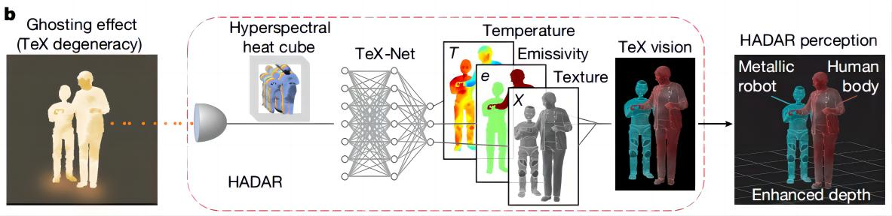
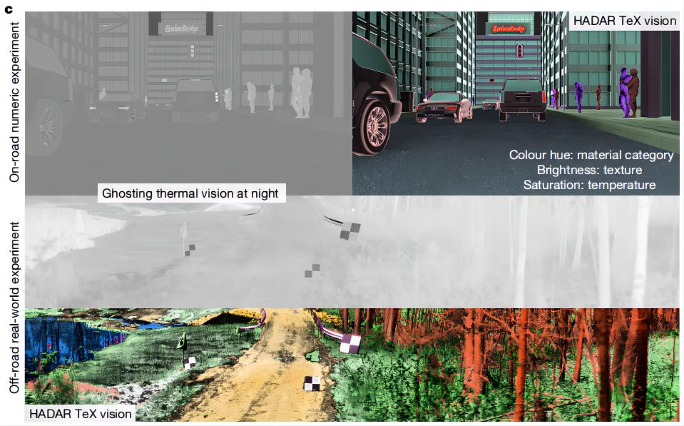
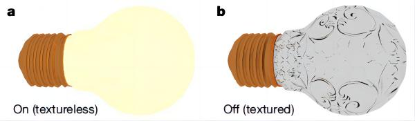
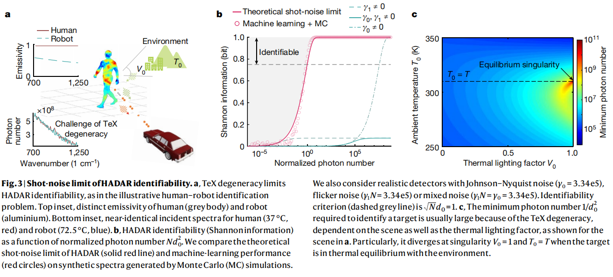
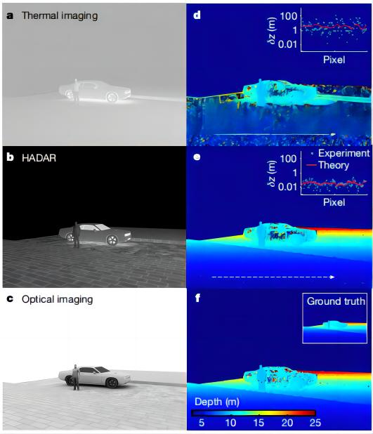
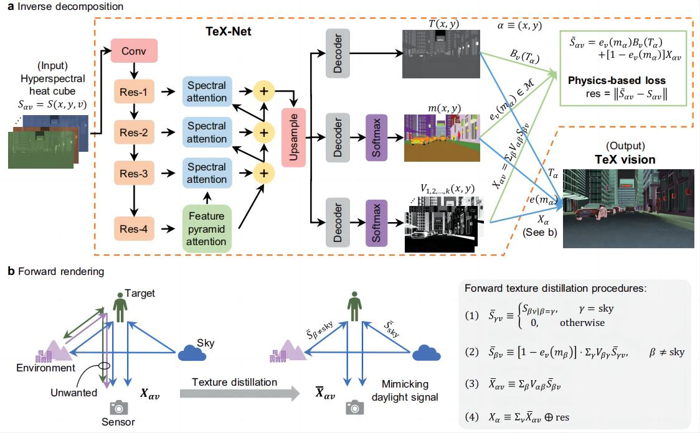
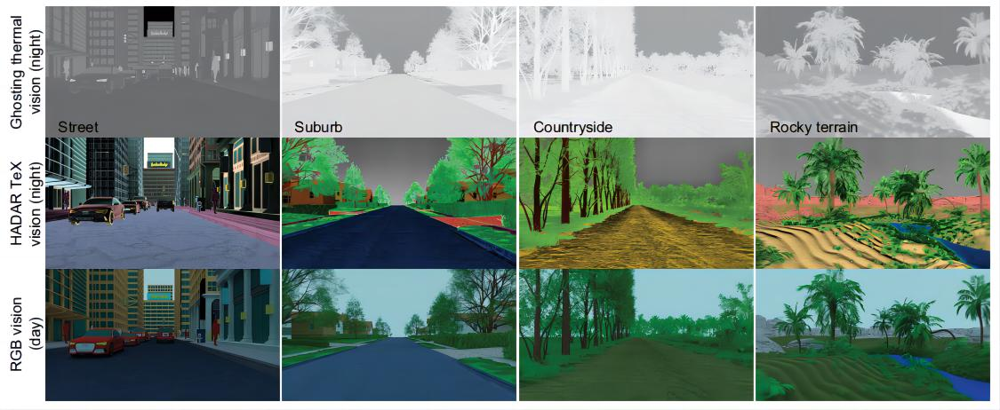
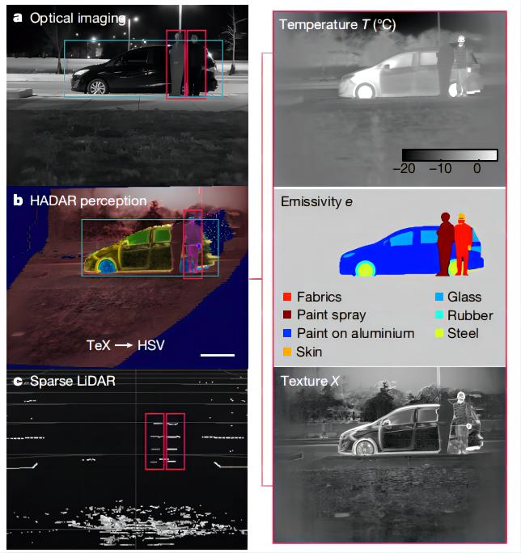
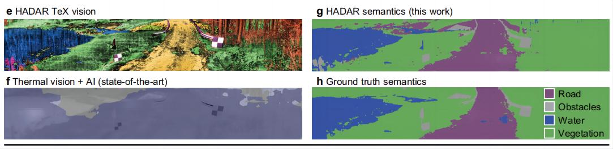

HADAR——热辅助感知系统¶
综述¶
期刊时间：Nature 2023
预备知识¶
发射（Emission）和散射（Scatter）¶
定义
- Emission（发射）：这是指一种过程，其中一个物体或系统释放能量或粒子。这可以是光、热能、粒子等的释放。例如，一个热体发射热辐射就是一个发射过程，类似于太阳发射光和热能；
- Scatter（散射）：这是指当光或粒子与物质相互作用时，改变其传播方向而不改变其能量的过程。在散射过程中，光或粒子会从原来的路径上偏离（偏离了会怎么样？），但通常保持其能量不变。这个过程可以在多种情况下发生，如光在空气中散射、X射线在物质中散射等。
能量改变
- Emission（发射）：在发射过程中，物体或系统通常释放能量，这意味着能量从高状态转移到低状态。这是一个能量释放的过程。
- Scatter（散射）：在散射过程中，通常不改变光或粒子的总能量，只是改变了其传播方向。
光谱辐射率（spectral emissivity）
光谱辐射率（spectral emissivity）是一个用于描述物体表面对热辐射的特性的物理量。它是一个与波长或频率有关的参数，用于表示物体在不同波长或频率下吸收和辐射热辐射的能力。
具体来说，光谱辐射率是一个介于0和1之间的数值，表示了物体表面在特定波长或频率下吸收和辐射热辐射的相对能力。当光谱辐射率为1时，表示物体表面是完美的黑体，它能够完全吸收并辐射热辐射。当光谱辐射率为0时，表示物体表面是完全反射热辐射的，不吸收任何辐射。在大多数情况下，物体的光谱辐射率介于0和1之间，表现为不同波长或频率下的变化。
光谱辐射率通常是波长或频率的函数，因此它可以描述物体在不同的光谱范围内的辐射特性。不同的材料和表面状态会导致不同的光谱辐射率曲线，这对于红外成像、热感应和热辐射分析等应用非常重要。科学家和工程师使用光谱辐射率来了解物体的热性质、材料特性和表面状态，这在各种领域，包括材料科学、工程、红外成像和遥感等方面都有广泛的应用。
主要思想¶
在现代工业技术的发展中，智能体通常使用非常先进的传感器设备来感知周围的环境，从而在没有人为干预的情况下做出决策。然而，从安全性的角度出发，许多智能体在感知场景时从根本上禁止主动模式，即不允许让智能体主动采取行动进行交互，往往需要依靠相机、雷达设备来被动地感知、探索环境。但是，这种被动策略也具有一定的局限性，例如用相机去感知环境这一过程对光照条件要求很高，在强光、黑暗或者恶劣天气中往往难以捕获场景信息。
在这种黑夜或恶劣天气的情况下，一种常见的应对方法就是使用来自红外热辐射信号去感知环境，也就是利用红外热信号去成像，可以在一定程度上看清物体的轮廓、形状。然而，热辅助感知存在根本的障碍，场景的多种物理属性混合在光子流中（即：温度T-物理状态、辐射系数M-材料指纹、纹理X-表面几何），物体和环境不断地发射和散射热辐射，进一步导致成像图片缺少纹理、深度信息，这一过程表现为“重影效应”（ghosting effect），纹理、深度信息的缺失降低了热成像的信息丰富度，导致热成像具有模糊、缺乏细节等问题，智能体很难根据热成像判断物体的形状、距离、材质等属性，严重影响了智能体的环境感知。
本文中，作者提出了热辅助检测和测距算法（Heat-Assisted Detection And Ranging, HADAR）来克服这一挑战，HADAR不仅能在黑夜中看到纹理和深度信息（就像白天一样），还可以感知到RGB或热视觉之外的物理属性，为实现完全被动的智能体感知任务铺平了道路。作者在本文中提出了HADAR估计理论，并解决了它的光子射击噪声限制，描绘了基于HADAR的人工智能性能的信息论界限，HADAR在夜间的感知性能要优于热成像的感知性能，并且在白天显示出了与RGB立体视觉相当的精度。
Tex分解和Tex视觉
作者提出了一种Tex分解方法来解决重影效应，这种策略可以从杂乱的热信号中恢复纹理，并且准确地解出Cramer-Rao边界上的温度和发射率（克拉美-劳界限，统计学概念），具体流程如下图所示：

具体恢复效果图如下所示，在夜间，HADAR可以有效地克服夜间重影效应，捕获纹理特征清晰的图像（黑白图为热成像案例，彩色图为HADAR成像案例）：

重影效应（ghosting effect）
首先作者使用了一个灯泡热辐射的例子来解释重影效应的起源，如下图所示，只有当灯泡关闭时，才能看到灯泡表面的几何纹理，当灯泡打开时，反射所显示的纹理在“直接辐射”（direct emission）中会完全消失。而在复杂场景中，每个物体都会发射热辐射，因此他们都是没有纹理的热光源，类似于发光的灯泡：

对于一个移动的物体\alpha而言，总热信号有两个附加值：
其中V_{αβ}为热照度因子，对于自然中高发射率的材料（例如皮肤和植物，e≈1），重影效果将会加剧，因为收集到的总信号主要由直接发射和微弱的散射信号组成，因此物体的能量是慢慢降低的，我们注意到S_{αv}在温度T、发射率e和纹理X的联合变换下是不变的（联合不变的是指？可以唯一确定吗？），我们将其称为TeX退化。和重影效应一样，这种TeX退化使得温度和发射率的分离成为定量热传感的一个相当大的障碍。
作者通过打破TeX退化，并将光谱发射率e_{αv}离散为e_v(m_a)来恢复纹理信息，材质库包含场景中所有可能的光谱发射率，可以表示为：
HADAR的可辨别性
作者发展了HADAR估计理论来解决从其热红外特征识别目标的基本限制，从根源上提升机器感知的性能。HADAR不同于传统的高光谱成像，在传统的高光谱成像中，材料的差异是由它们反射光谱之间的欧氏距离决定的。形成鲜明对比的是，HADAR的可辨别性由温度T、发射率E和纹理T三组参数估计所决定的。作者探索（exploit）了多参数Cramér–Rao边界，并且提出了基于物体固有物质属性的语义距离对物体进行分类，下图展示了人类与机器人识别的相关示例：

一个人形的目标可以是具有不同发射率的物体，例如人（有机皮肤或织物材料）或机器人（金属），但他们在探测器上会产生视觉上无法区分的入射光谱，作者将HADAR的可识别性定义为从N个入射光子中检索到目标材料的最大香农（Shannon）信息，它适用于所有场景（若推广到多材质场景，可以参考扩展数据图6），HADAR的可辨别性I定义为：
从上面的方程中可以看出，由光子的离散性引起的短噪声限制为所有识别算法的性能设定了信息论的上限。在这里，作者到达了广泛用于感知的基于机器学习方法的界限，作者利用蒙特卡罗模拟在短噪声限制下生成了人类和机器人的几种光谱，并且使用机器学习策略实现材质的分类。从下图b中可以发现，机器学习性能（红色圆圈）确实受到理论极限（红色曲线）的限制，我们的理论也适用于具有常见噪声源的现实检测器和相应的算法性能，下图c显示了识别人形目标所需的最小光子数，该光子数由单位统计距离决定（\sqrt Nd_0=1,I\approx 0.75bits）
HADAR深度估计策略
物体的深度是自主导航关键的场景属性，白天下的RGB立体视觉已经有了广泛的应用，但是基于红外热能的测距难以实现，作者证明了HADAR在夜间测距方面要优于传统的热测距，利用HADAR的测距精度与白天下的RGB立体视觉相当。HADAR的测距方法利用基于TeX视觉的立体视觉，但是为了展示纹理特征在测距中的重要性，并且更好地捕捉物理现象，这里我们重点关注可以通过TeX分解来重建的散射信号，稍后讨论真实世界下的HADAR测距。对于一个简洁的汽车/行人场景，热成像由于TeX的退化而丢失纹理，并且导致测距不准（如下图ad），HADAR的恢复的纹理（b）与灰度光学成像（c）相当，HADAR的测距结果（e）与RGB立体视觉（f）相当，在定量上，对于虚线上的绝对测距误差，与热测距相比，HADAR的精度提高了大约100倍：

作者得到了HADAR测距的基本限制，为未来自主导航应用提供了严格的理论基础（也就是提供了性能上限，暂时不太理解这里怎么得到的）
方法¶
TeX退化
对于一个物体\alpha，其光谱辐射可以表示为S_{\alpha v}=e_{\alpha v}B_v(T_{\alpha})+[1-e_{\alpha v}]X_{\alpha v}，将其物理属性\{T_{\alpha},e_{\alpha v},X_{\alpha v}\}改为\{T'_{\alpha},e'_{\alpha v},X'_{\alpha v}\}光谱辐射不变，其中T'_{\alpha}为任意的温度值，X’_{\alpha v}为任意的光谱纹理曲线，光谱发射率e'_{\alpha v}由如下公式得到：
TeX分解
作者利用材质库\mathcal M 和XXXX的数学结构来克服TeX的退化问题，在本文中，作者根据具体问题提出了几种完全解决TeX退化的方法，基于学习的TeX-Net在分解TeX时使用空间和光谱信息，是解决TeX退化的一般方案，同时作者还提供了解析逆函数、最小二乘估计器和TeX-SGD（半全局分解）作为非机器学习的基线。对于HADAR数据库和HADAR原型机2的实验，作者使用TeX-Net和TeX-SGD方法。
引导公共政策
HADAR的识别准则为\frac{Nd_0^2}{1+\gamma}=1，当\frac{Nd_0^2}{1+\gamma}\ge 1时，我们可以识别目标的材质信息。举个例子来说，人（皮肤）与机器人（铝）之间的语义距离为d_0\approx0.001，如果环境温度为T_0=20℃，V_0=0.5，那么需要\frac{N}{1+\gamma}\ge10^6才能识别目标，观测到的光子数N与人机场景（human-robot scene），f值（f-number，焦距f超过光圈大小D），曝光时间t，和像元大小A_p有关（也就是跟相机硬件有关，可以参考补充材料SI的热信号模型），最终会得到一个相机最低配置要求\frac{tA_p}{(1+\gamma)(f/D)^2}\ge5\times10^{-16}，如果相机硬件配置不够，则捕获到的光子数据就会信息不足，无论收集多少训练数据用于训练神经网络，效果都不会特别好。
对于原型机1，即FLIR A325sc，有\frac{tA_p}{(1+\gamma)(f/D)^2}= 8.16\times10^{-18}，如果在一个图像帧内想要满足要求，那么就必须有d_0>0.0078，即语义信息距离不能过近。总结：相机硬件设备，即可捕获的光子数与算法最终识别材料的性能息息相关，可捕获的光子数越多，则后续的算法越能区别相似度高的材质。
算法流程
算法的具体流程如下图所示：
HADAR以热光子流作为输入，记录高光谱成像的热立方体（作者专门发明了一款设备，来捕获热光子流，具体怎么操作的暂时还不太理解），之后将数据传入TeX-Net网络中预测三组数据，即物体表面的温度、物体的发射率以及物体的纹理，三组数据共同构成TeX成像。
对于网络部分，网络结构如下图TeX-Net所示，算法对每个像素点进行分类回归（类似语义分割），从而得到三组输出：物体表面的温度T、物体材质的发射率m（表示物体表面发射红外辐射的能力，用于区分不同的材质）和光照因子V，三个输出共同构成HADAR算法对物体和环境的物理描述。HADAR算法再根据估计得到的温度、发射率和光照因子来重建出物体和环境的纹理、形状和颜色，重建结果共同构成了HADAR算法对物体和环境的视觉呈现。

TeX-Net网络在三个方面受到了物理学的启发：首先，热立方体的TeX分解依赖于空间模式和光谱热特征，因此，网络结构采样光谱和金字塔（空间）注意力层；其次，由于TeX的简并性，必须指定数学结构X_{\alpha v}=\sum_{\beta\neq\alpha}V_{\alpha\beta}S_{\beta v}来保证逆映射的唯一性，因此网络必须要学习光照因子V，而不是纹理X，即网络不能端到端的训练；第三，材质库m（即发射率）及其维度是整个网络的关键，TeX-Net既可以使用T、m和V的真值来进行有监督训练，也可以使用材质库m、普朗克定律B_v(T_{\alpha})和X_{\alpha v}的数学结构来进行无监督训练。在监督训练中，损失函数是个体损失和正则化超参数的组合；在无监督训练中，损失函数定义在重构热立方体上，并且基于热信号的物理模型。在实践中，作者使用了T,e,V贡献50\%和物理损失贡献50\%的混合损失训练网络。
注：
- X_{\alpha v}=\sum_{\beta\neq\alpha}V_{\alpha\beta}S_{\beta v}表示环境中所有其他物体\beta对物体\alpha的热照度，其中V_{\alpha\beta}为热照度因子；
源码记录¶
- 整个TeX-Net网络就是一个语义分割网络，改了一下输入通道数和输出通道数，输入通道数改为了49，输出通道数为30+1(train on T)+2(train on v)，30应该是指的材质信息e/m的通道数，也即类别数（后面用预测的e计算交叉熵损失）
- 网络得到输出之后，按通道方向将其拆分：e/m有30个通道，v有2个通道（输出结果会经过一次softmax运算，再计算KL散度损失），T有1个通道；e/m采用交叉熵优化、v采用KL散度优化、T采用MSE损失优化；无监督损失的计算过程还没弄清楚，有点复杂。
可视化¶
夜间热成像、夜间HADAR成像、白间所拍摄的图像对比

热成像与HADAR成像在测距上的对比
第一行展示了基于原始热图像的测距结果，第二行展示了利用HADAR成像的测距结果，第三行是正常光照下的测距结果，从对比图中可以发现，原始热图由于重影现象，导致测距结果的精度很低，而HADAR成像可以很好地恢复纹理特征，可以有效地提升深度估计的精度：
热成像、激光雷达成像与HADAR在目标检测上的对比
图像中有一辆车、一个人和一个人像纸板，图像（a）表示热成像的目标检测结果，错误的检测出两个人和一辆车，（c）表示激光雷达点云成像，检测出两个人，只有HADAR成像方法（b）做出了准确的检测，检测出一个人和一辆车。

HADAR成像与热信号+AI算法增强后的图像在语义方面的对比

注：这篇文章的主要贡献在于热力学、光学成像的研究，算法相关的研究非常少，所以原理部分看的不是很明白，只是简单整理了一下研究动机和研究结果。